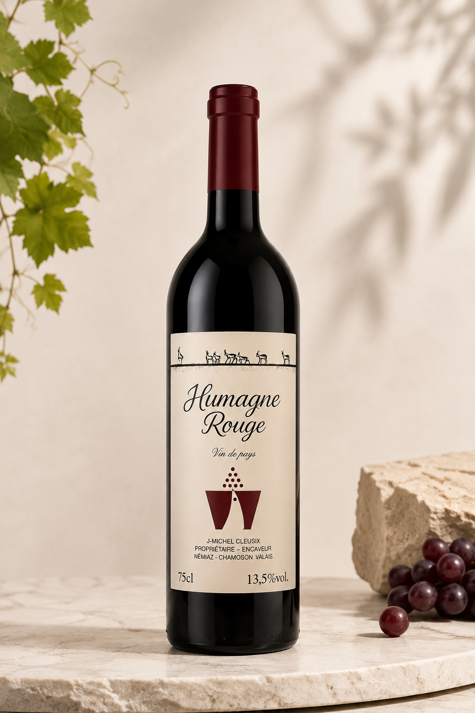

Vin rouge
Vin de pays · Valais
Humagne Rouge
Cépage typiquement valaisan aux arômes de fruits rouges sauvages et d’épices.
Vin rouge de caractère typiquement valaisan. Intense, épicé et élégant, idéal avec gibier et viandes braisées.
CHF 15.–
Prix affiché sur cavecleusix.ch
Achat en ligne : le bouton Shopify viendra ici.